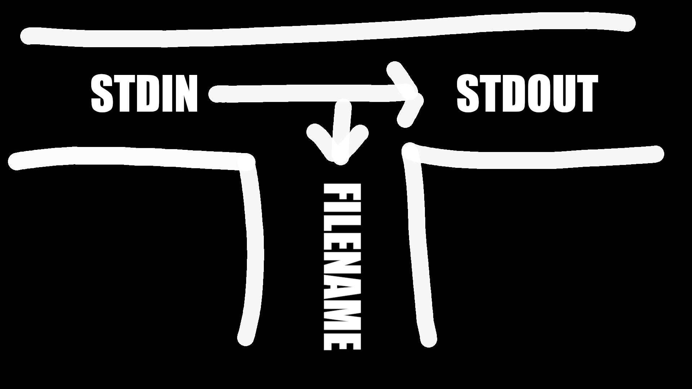

General Idea for Pipes in UNIX:
Bad/Naive Approach: Using Files
Design Philosophy of Pipes:
stdout of out one command to the stdin of another.Examples: Using pipes
# Count number of lines the who command returned who | wc -l # Search for all entries in world file for net-im packages cat /var/lib/portage/world | grep "net-im/" # Sort list of users who | sort
Beginner Mistake:
|v.s.>Don’t confuse pipes and redirection!
- Pipes are a UNIX feature for creating data pipelines between processes,
- Redirection is a shell feature for writing the output of processes into files.
Filters: Class of UNIX utilities that read from standard input, transform the file, and write to standard out.
stdin and stdout how they want.stdout sort file.txt doesn’t modify the contents of file.txt.cat: Read lines from stdin (and more files), and concatenate them to stdout.more/less: Read lines from stdin, and provide a paginated view to stdout.head: Read the first few lines from stdin (and more files) and print them to stdout.tail: Read the last few lines from stdin (and more files) and print them to stdout.tee: Copy stdin to stdout and one or more filescut: Cut specified byte, character or field from each line of stdin and print to stdout.paste: Read lines from stdin (and more files), and paste them together line-by-line to stdout.wc: Read from stdin, and print the number of newlines, words, and bytes to stdout.tr: Translate or delete characters read from stdin and print to stdout.sort: Sort the lines in stdin, and print the result to stdout.uniq: Read from stdin and print unique (that are different from the adjacent line) to stdout.grep: Find lines in stdin that match a pattern and print them to stdout.sed: Streamline Editor used to edit text in non interactive mode.awk: Powerful editing tool for files with programming featuresMore on
cat
catcopies its input to output unchanged (identity filter). When supplied a list of file names, it concatenates them ontostdout.Some Options (Flags):
-n: Number output lines starting from 1.-v: Display control-characters in visible form (e.g.,^M)
More on
more
moreis likecat, except it displays content page-by-page.
- Example:
more +4 foo.txtdisplays file content starting at line 4.
More on
less
lesslets you view the contents of a file similarly tomore, except it doesn’t load the entire file at once.
lessis faster thanmoreand has a larger number of features.
More on
headandtail
headdisplays the first few lines of a file.Format:
head [-n] [filename...]
-n: Number of lines to display (default: 10)- filename: List of filenames to display
- When more than one filename is given, start of each listing begins with
==>filename<==.
taildisplays the last few lines of a file.Format:
tail -number [rbc] [f] [filename]
-number: Number of lines to display (default: 10)b,c: Units of lines/blocks/charactersr: Print ins reverse order (lines only)
Example: Using
headandtailto get lines 4—10 of a filetail -n +4 patch.sh | head -n 6
More on
wc
wccounts the number of lines, characters, or words.
- By default, prints number of all three.
Options:
-l: Count lines-w: Count words-c: Count characters
More on
tee
teecopiesstdintostdoutfor one or more files.
- Captures intermediate results from a filter in the pipeline.
- Remember, pipes can have multiple readers and writers!
Format:
tee [ -ai ] file-list
-a: append to output file rather than overwrite, default is to overwrite (replace) the output file-i: ignore interruptsfile-list: one or more file names for capturing outputExample: Using
teeto store the state of a pipels | head -10 | tee first_10.txt | tail -5
- This line prints to
stdoutthe last five lines (tail -5) of the first 10 lines (head -10) inls.
- It also captures the result of pipe after doing
head -10and stores it infirst_10.txt
More on
cutNote: Delimited data
- Data can be delimited by a variety of symbols (e.g., tabs, bars, colons). When using
cut, make sure you’re using the right delimiter!
cutprints selected parts of input lines.
- Can select columns
- Can select a range of character positions
Options:
-f listOfCols: print only the specified columns on output
- Can be given as range (e.g.,
1-5) or comma-separated (e.g.,1,3,4,5)-c listOfPos: print only chars in the specified positions
- Can be given as range (e.g.,
1-5) or comma-separated (e.g.,1,3,4,5)-d c: use charactercas the column separator
- Defaults to
<tab>Example: Using
cut$ cat /etc/passwd | cut -d: -f1
- Print the first column of the
/etc/passwdfile (only usernames)$ cat /etc/passwd | cut -d: -f1,7
- Print the first and last column of the
/etc/passwdfile (username and default shell)- Note how there’s no way to refer to the last column without counting the columns.
More on
paste
pastedisplays several text file “in parallel” on output.
- If the inputs are files $, \varsigma, and \upsilon:
- Line 1 will be composed of the first line of $, first line of \varsigma, and first line of \upsilon.
- Line 2 will be composed of the second line of $, second line of \varsigma, and second line of \upsilon.
- etc.
- Lines from each file are separated by a tab character.
- If files are different lengths the output will have all the lines from the longest file, missing lines will have empty strings.
Example: Using
pasteSuppose we have the following files:
a.txt --- 1 2b.txt --- 3 4c.txt --- 5 6$ paste a.txt b.txt c.txt 1 3 5 2 4 6Example: Using
pasteto reverse acut(cut -f1 -d: < /etc/passwd) > 0_usernames.txt (cut -f2 -d: < /etc/passwd) > 1_encrypted_password.txt (cut -f3 -d: < /etc/passwd) > 2_uid.txt (cut -f4 -d: < /etc/passwd) > 3_gid.txt (cut -f5 -d: < /etc/passwd) > 4_fullname.txt (cut -f6 -d: < /etc/passwd) > 5_homedir.txt (cut -f7 -d: < /etc/passwd) > 6_loginshell.txt
- Cut the /etc/passwd file into seven files.
paste -d: 0_usernames.txt 1_encrypted_password.txt 2_uid.txt 3_gid.txt 4_fullname.txt 5_homedir.txt 6_loginshell.txt
- Perfectly reconstruct the
/etc/passwdfile from itscutcomponents.
More on
tr(translating strings)
trcopiesstdintostdoutwith substitution or deletion of selected characters.
- Reads from
stdinFormat:
tr [-cds] [string1] [string2]
-d: delete all input characters contained in string1-c: complements the characters in string1 with respect to the entire ASCII character set-s: squeeze all strings of repeated output characters in the last operand to single characters[string1]and[string2]: Any character that matches a character instring1is translated into the corresponding character insstring2.
- Any character that doesn’t match a character in
string1is passed tostdoutunchanged.Examples:
# Replace all instances of s with z tr s z# Replaces all instances of s with z and o with x tr so zx# Replaces all lower-case characters with upper-case characters tr a-z A-Z# Deletes all a-c characters tr –d a-c# Change delimiter of /etc/passwd tr ‘:’ ‘|’ /etc/passwd# Change text from upper to lower case in two different ways cat lowercase.txt | tr '[A-Z]' '[a-z]' > uppercase.txt cat lowercase.txt | tr [:upper:] [:lower:] > uppercase.txt# Import DOS files tr –d ’\r’ < dos_file.txtRemember:
trtranslates strings character-by-character, it doesn’t substitute string-by-string.
More on
sortFormat:
sort [-dftnr] [-o filename] [filename(s)]
-d: Dictionary order, only letters, digits, and whitespace are significant in determining sort order-f: Ignore case (fold into lower case)-t: Specify delimiter-n: Numeric order, sort by arithmetic value instead of first digit-r: Sort in reverse order-t: delimiter character-k: column-o: filename - write output to filename, filename can be the same as one of the input filesExamples:
sort -t: -nk2 /etc/passwd
- Sort the
/etc/passwdfile numerically (-n), by uid (-k2), using the “:” character as the field separator (-t:).sort -t: -nrk3 /etc/passwd
- Sort the
/etc/passwdfile numerically (-n), by gid (-k3), using the “:” character as the field separator (-t:), in reverse order (-r)
More on
uniq(list unique items):
uniqremoves or reports adjacent duplicate lines.
- Tip: Use
sortto make all duplicate lines adjacent.Format:
uniq [-cduif] [input-file] [output-file]
-c: Precede each output line with the number of time the line occurred in input.-d: Only output lines that were repeated.-u: Only output lines that were unique.-i: Case insensitive comparison-f [num]: Ignore first[num]fields in each input line.
- Field: String a non-blank characters separated from adjacent fields by blanks.
-s [chars]: Ignore first[chars]characters in each input line.
More on
find(apply expressions to files):
Format:
find [pathlist] [expression]
[pathlist]: Recursively descends through this path, applying[expression]to every file.[expression]: Expression that gets applied to every file
- Expressions:
-name pattern
- Find files where the pattern returned
true.
- e.g.,
-name '*.c'-type ch
- Find files of type (
chc: character,b: block,fplain file, etc.)
- e.g.,
find ~ -type f-perm[+-]mode
- Find files with given access mode (given in octal mode)
- e.g.,
find . -perm 755-user uid/username
- Find files by owner uid or username
-group guid/groupname
- Find files by group guid or groupname
-size size
- Find files by
size.- etc…
- Logical Operations:
!: Returns logical negation of expressionop1 -a op2: Matches patternsop1andop2op1 -o op2: Matches patternsop1orop2(): Group expressions together- Actions:
-exec cmd: Executescmd(must be terminated by an escaped semicolon.
- If you specify
{}as an argument, it will be replaced by the name of the current file.- Executes once per file
- e.g.,
find /tmp -name "*.pdf" -exec rm "{}" ";"Examples:
# Print all png files in my documents folder find ~/Pictures -name '*.png'# Delete all pdf files in my /tmp folder find /tmp -name "*.pdf" -exec rm "{}" ";"# Print all files in my videos folder larger than 500MiB find ~/Videos -size +500M -print# Print all config files modified in the last day find ~/.config -mtime 1# Count words of all config files modified in the last day find ~/.config -mtime 1 -exec wc -w {} \;
- Note how the
*is being escaped to suppress shell interpretation.